# Import all required libraries
# Data handling and manipulation
import pandas as pd
import numpy as np
# Machine learning models
from sklearn.preprocessing import LabelEncoder, StandardScaler
from sklearn.decomposition import PCA
import mord as m
from sklearn.discriminant_analysis import LinearDiscriminantAnalysis
from sklearn.neighbors import KNeighborsClassifier
from sklearn.tree import DecisionTreeClassifier, plot_tree
from sklearn.ensemble import RandomForestClassifier
from sklearn.svm import SVC
# Model evaluation and validation methods
from sklearn.model_selection import train_test_split
from sklearn.model_selection import KFold
from sklearn.model_selection import LeaveOneOut
from sklearn.model_selection import cross_val_score
from sklearn.utils import resample
# Metrics for model evaluation
from sklearn.metrics import accuracy_score
from sklearn.metrics import precision_score
from sklearn.metrics import recall_score
from sklearn.metrics import f1_score
from sklearn.metrics import roc_curve, auc
from sklearn.metrics import roc_auc_score
from sklearn.metrics import confusion_matrix
# Utility for data preprocessing
from sklearn.preprocessing import StandardScaler
from sklearn.preprocessing import LabelEncoder
from sklearn.preprocessing import label_binarize
# For advanced visualizations
import matplotlib.pyplot as plt
import seaborn as sns
# Increase font size of all Seaborn plot elements
sns.set(font_scale = 1.25)
# Set Seaborn theme
sns.set_theme(style = "white")Classification II + Model Evaluation
Lecture 6
John Chen
University of Arizona
INFO 523 - Fall 2025
Warm up
Announcements
HW 03 is due Wed, Mar 20, 11:59pm
RQ 3 is due Wed, Mar 20, 11:59pm
Setup
Model Evaluation
Looking back
Can we predict high-risk credit individuals by their financial traits?

What did we do?
Used several models
Compared and contrasted efficacy
Concluded that we couldn’t predict credit risk
Refresher on our data (with ordinal risk)
| emp_title | emp_length | state | homeownership | annual_income | verified_income | debt_to_income | delinq_2y | earliest_credit_line | inquiries_last_12m | ... | issue_month | loan_status | initial_listing_status | disbursement_method | balance | paid_total | paid_principal | paid_interest | paid_late_fees | risk | |
|---|---|---|---|---|---|---|---|---|---|---|---|---|---|---|---|---|---|---|---|---|---|
| 0 | global config engineer | 3.0 | NJ | MORTGAGE | 90000.0 | Verified | 18.01 | 0 | 2001 | 6 | ... | Mar-2018 | Current | whole | Cash | 27015.86 | 1999.33 | 984.14 | 1015.19 | 0.0 | Medium Risk |
| 1 | warehouse office clerk | 10.0 | HI | RENT | 40000.0 | Not Verified | 5.04 | 0 | 1996 | 1 | ... | Feb-2018 | Current | whole | Cash | 4651.37 | 499.12 | 348.63 | 150.49 | 0.0 | Medium Risk |
| 2 | assembly | 3.0 | WI | RENT | 40000.0 | Source Verified | 21.15 | 0 | 2006 | 4 | ... | Feb-2018 | Current | fractional | Cash | 1824.63 | 281.80 | 175.37 | 106.43 | 0.0 | Medium Risk |
| 3 | customer service | 1.0 | PA | RENT | 30000.0 | Not Verified | 10.16 | 0 | 2007 | 0 | ... | Jan-2018 | Current | whole | Cash | 18853.26 | 3312.89 | 2746.74 | 566.15 | 0.0 | Low Risk |
| 4 | security supervisor | 10.0 | CA | RENT | 35000.0 | Verified | 57.96 | 0 | 2008 | 7 | ... | Mar-2018 | Current | whole | Cash | 21430.15 | 2324.65 | 1569.85 | 754.80 | 0.0 | Medium Risk |
5 rows × 51 columns
Our preprocessing
# Encode categorical variables
categorical_columns = loans_class.select_dtypes(include = ['object', 'category']).columns.tolist()
# Encode categorical variables
label_encoders = {col: LabelEncoder() for col in categorical_columns}
for col in categorical_columns:
loans_class[col] = label_encoders[col].fit_transform(loans_class[col])
# Define features and target
X = loans_class.drop('risk', axis = 1)
y = loans_class['risk']
# Split the data
X_train, X_test, y_train, y_test = train_test_split(X, y, test_size = 0.2, random_state = 42)
# Reduce dimensionality to prevent overfitting
pca = PCA(n_components = 2)
X_train_pca = pca.fit_transform(X_train)
X_test_pca = pca.transform(X_test)Reminder: decision boundary
def decisionplot(model, X, y, resolution=216):
# Split the data into features (X) and the class variable (y)
x_min, x_max = X.iloc[:, 0].min() - 1, X.iloc[:, 0].max() + 1
y_min, y_max = X.iloc[:, 1].min() - 1, X.iloc[:, 1].max() + 1
xx, yy = np.meshgrid(np.linspace(x_min, x_max, resolution),
np.linspace(y_min, y_max, resolution))
# Predict outcomes for each point on the grid
if isinstance(model, LinearDiscriminantAnalysis):
# For LDA, we need to use the decision_function method
Z = model.decision_function(np.c_[xx.ravel(), yy.ravel()])
else:
Z = model.predict(np.c_[xx.ravel(), yy.ravel()])
if isinstance(model, LinearDiscriminantAnalysis):
# Reshape LDA decision function output appropriately
Z = Z.reshape(-1, 1)
else:
Z = Z.reshape(xx.shape)
# Plot the actual data points
plt.scatter(X.iloc[:, 0], X.iloc[:, 1], c=y, edgecolors='k', s=20)
# Overlay the decision boundary
plt.contourf(xx, yy, Z, alpha = 0.5)
# Calculate the accuracy
predictions = model.predict(X)
acc = accuracy_score(y, predictions)
# Set labels for axes
plt.xlabel(X.columns[0])
plt.ylabel(X.columns[1])
plt.show()What models will we reuse?
Ordinal Logistic Regression Accuracy: 0.549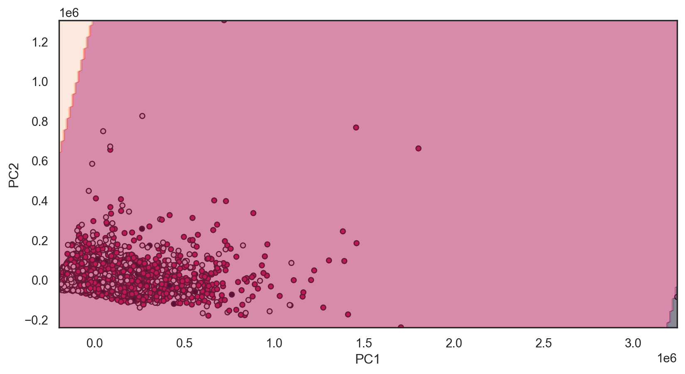
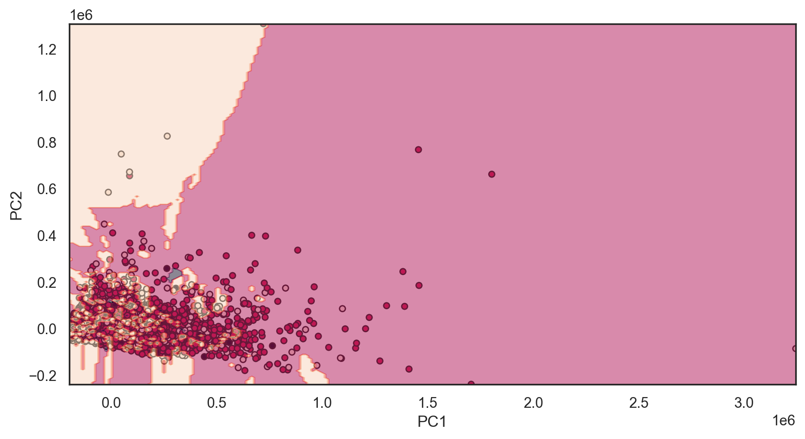
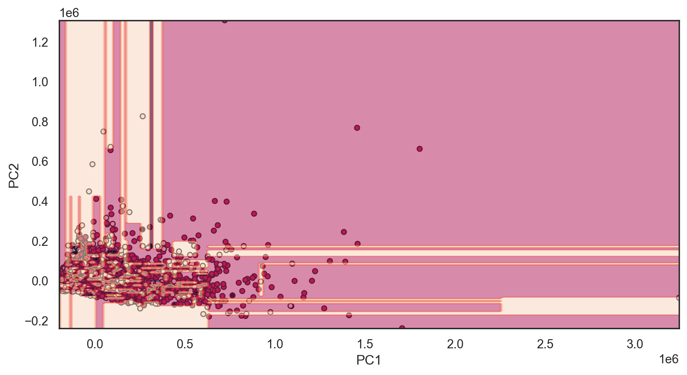
Model Evaluation
Model selection is the task of selecting a model from among various candidates on the basis of performance criterion to choose the best one. In the context of machine learning and more generally statistical analysis, this may be the selection of a statistical model from a set of candidate models, given data. Typically, Occam’s Razor is the best approach
Broadly we will focus on two categories
Evaluating performance
- The process of assessing the performance of a machine learning model using various metrics, such as accuracy, precision, recall, and F1 score, to determine how effectively it makes predictions on new, unseen data.
Validation methods
- The technique of verifying a machine learning model’s performance and reliability on a separate dataset (validation set) that was not used during the model’s training, to ensure that it generalizes well to new data.
Evaluating performance
Back to Confusion Matrices
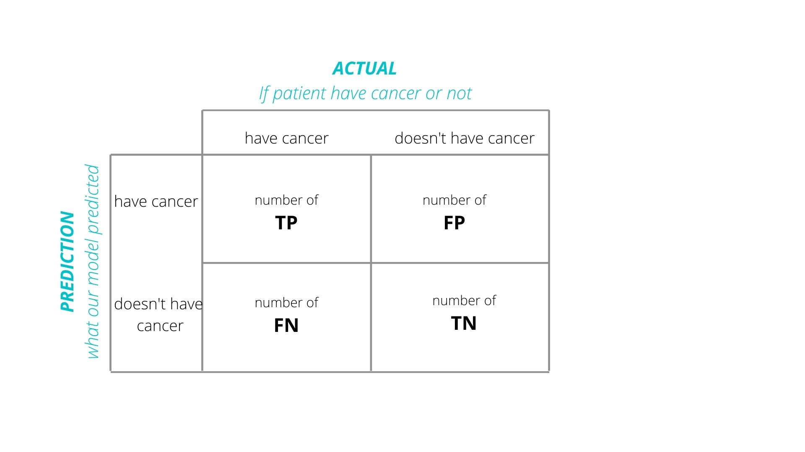
Accuracy
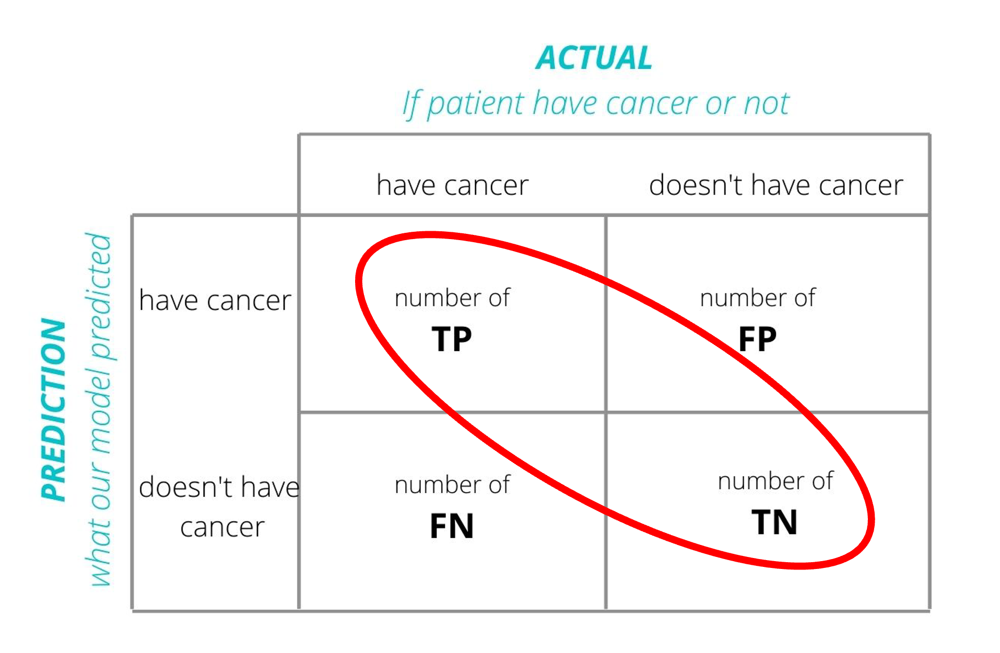
Error Rate \(= \frac{FP + FN}{TP + TN + FP + FN}\)
Definition: The proportion of true results (both true positives and true negatives) among the total number of cases examined.
Use Case: Best for balanced datasets where each class is approximately equally represented.
Pros:
Intuitive and easy to understand.
Useful when the costs of false positives and false negatives are similar.
Cons:
- Can be misleading in imbalanced datasets (where one class significantly outnumbers the other).
- Doesn’t consider the type of errors (false positives vs. false negatives).
Precision
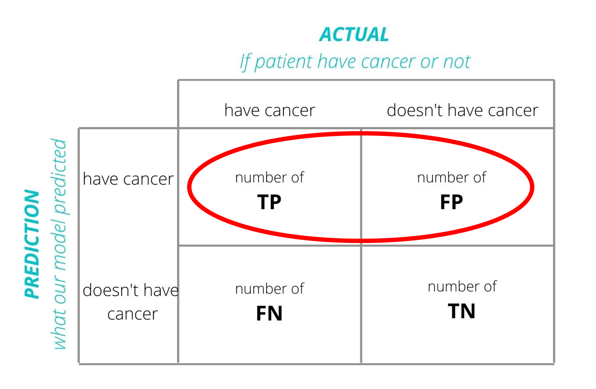
Error Rate \(= \frac{TP}{TP + FP}\)
Definition: The ratio of true positives to the sum of true and false positives. It’s a measure of a classifier’s exactness.
Use Case: Important when the cost of false positives is high (e.g., in spam detection).
Pros:
Focuses on the positive class’s predictive power.
Useful in imbalanced datasets to evaluate the performance of the minority class.
Cons:
- Does not consider false negatives (i.e., how many positive cases were missed).
Recall (Sensitivity)
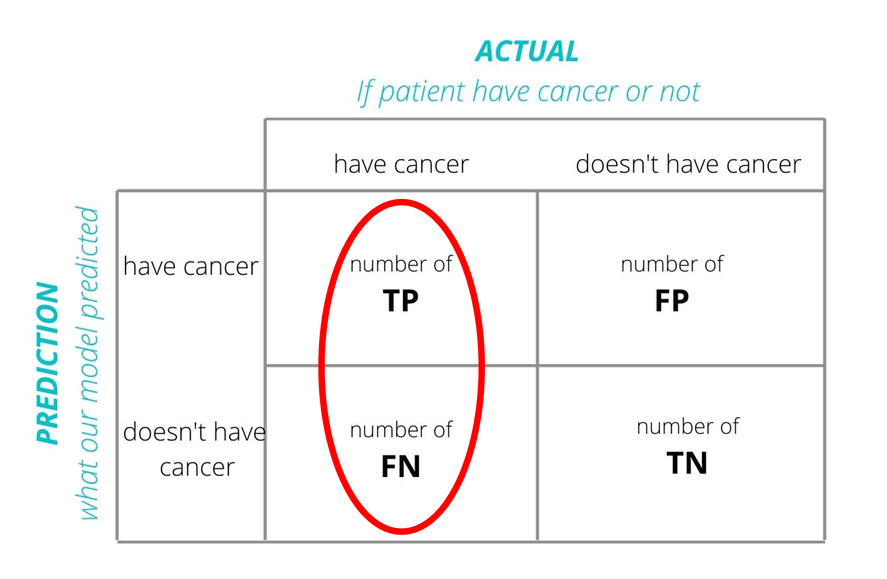
Error Rate \(= \frac{TP}{TP + FN}\)
Definition: The ratio of true positives to the sum of true positives and false negatives. It’s a measure of a classifier’s completeness.
Use Case: Crucial when the cost of false negatives is high (e.g., in disease screening).
Pros:
Ensures that most positive examples are correctly recognized.
Very useful in imbalanced datasets for evaluating how well the minority class is being predicted
Cons:
- Does not consider false positives (i.e., can lead to many false alarms).
F1 Score
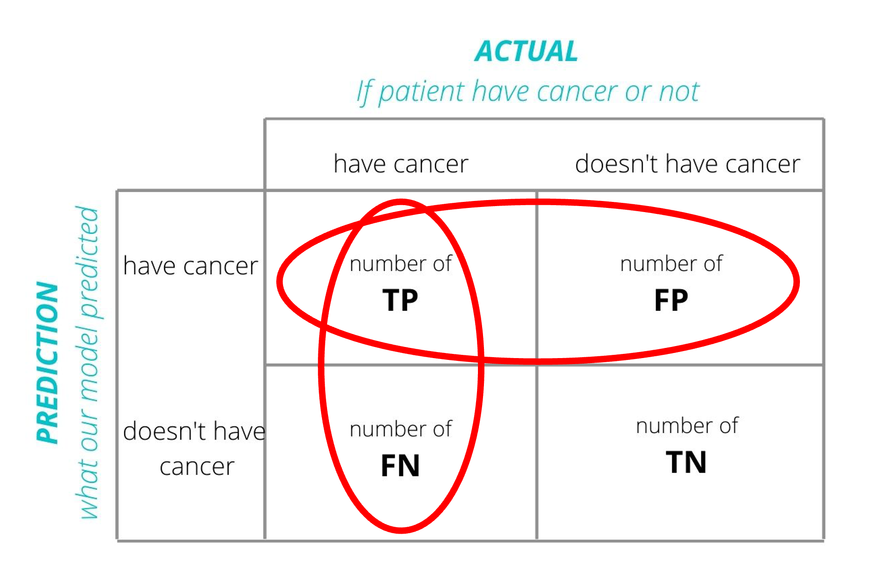
Error Rate \(= 2\times\frac{precision \times recall}{precision + recall} = \frac{TP}{TP + \frac{1}{2}(FP + FN)}\)
Definition: The harmonic mean of precision and recall.
Use Case: When you need a balance between precision and recall.
Pros:
Combines precision and recall into a single metric.
Useful in imbalanced datasets or when both types of errors are equally costly.
Cons:
- Not as intuitive as accuracy.
- Harmonic mean can be influenced heavily by lower values of either precision or recall.
AUC-ROC
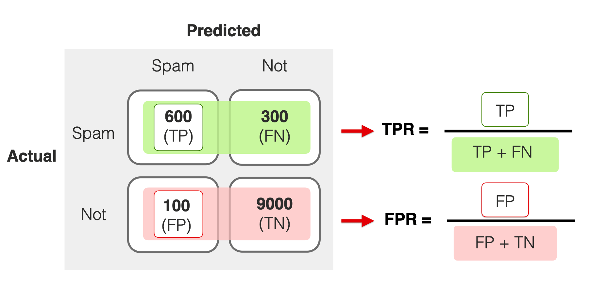
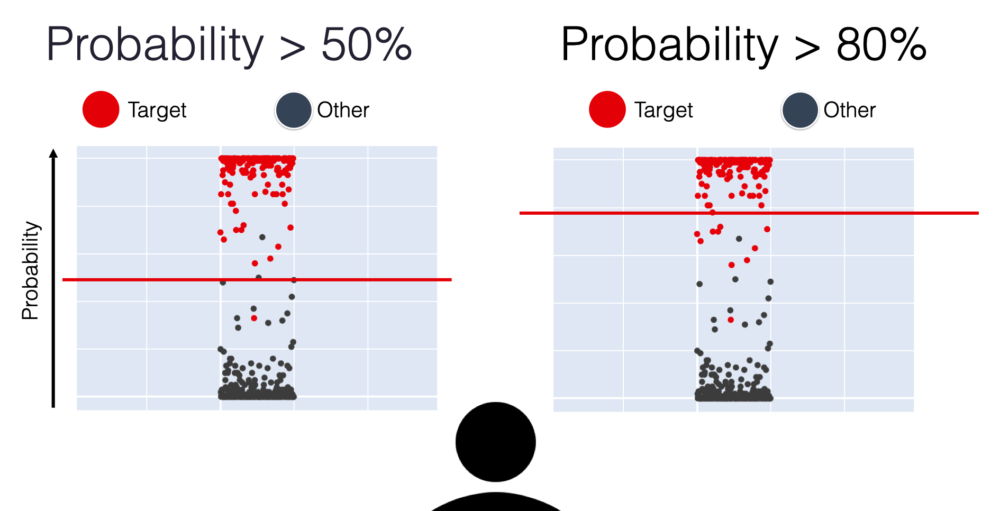
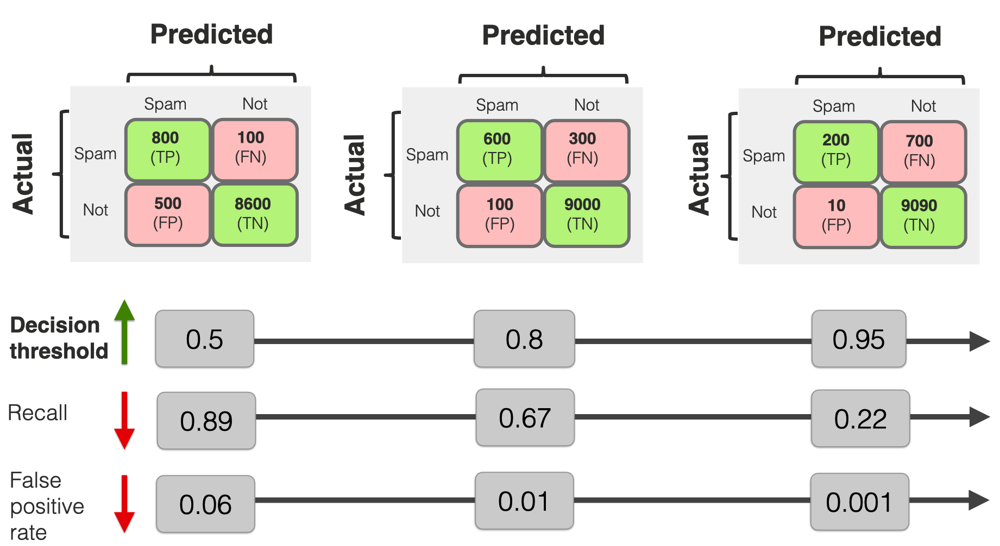
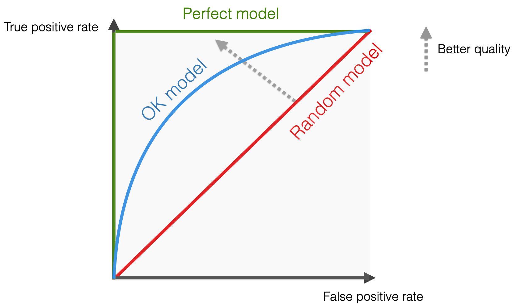
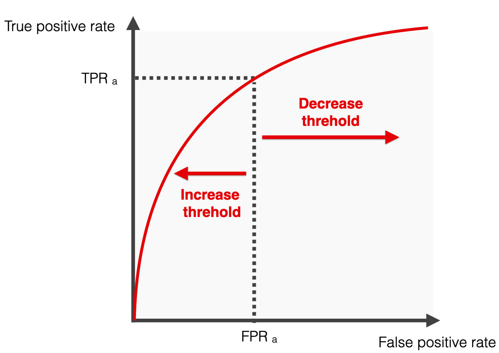
Left side = more “confident” thresholds: lower recall and fewer false positive errors
Right side = “less strict” scenarios when the threshold is low: both recall and False Positive rates are higher, ultimately reaching 100%
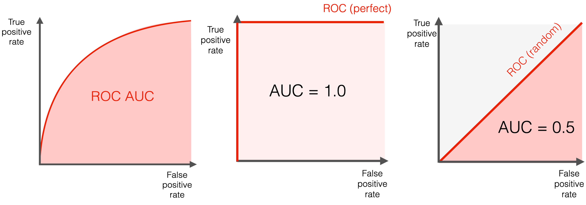
Single metric to summarize the performance of models
Common calculation - trapezoid rule
Definition: Measures the ability of a classifier to distinguish between classes and is used as a summary of the ROC curve.
Use Case: Effective for balanced and imbalanced datasets, especially for binary classification problems.
Pros:
Performance measurement for the classification model at various thresholds settings.
AUC-ROC near 1 indicates a good ability to distinguish between positive and negative classes.
Cons:
Can be overly optimistic in imbalanced datasets.
Does not distinguish between types of errors.
Applying model evaluation
Using the decision tree model
Applying model evaluation
Code
# Binarize the output for multiclass
y_test_binarized = label_binarize(y_test, classes = np.unique(y_train))
n_classes = y_test_binarized.shape[1]
# Get the probability predictions for each class
y_score = dtree.predict_proba(X_test_pca)
# Compute ROC curve and ROC area for each class
fpr = dict()
tpr = dict()
roc_auc = dict()
for i in range(n_classes):
fpr[i], tpr[i], _ = roc_curve(y_test_binarized[:, i], y_score[:, i])
roc_auc[i] = auc(fpr[i], tpr[i])
# Calculate macro-average ROC-AUC
roc_auc_macro = np.mean(list(roc_auc.values()))
print(f"Macro-average ROC-AUC: {roc_auc_macro:.2f}")
# Calculate micro-average ROC-AUC
fpr["micro"], tpr["micro"], _ = roc_curve(y_test_binarized.ravel(), y_score.ravel())
roc_auc_micro = auc(fpr["micro"], tpr["micro"])
print(f"Micro-average ROC-AUC: {roc_auc_micro:.2f}")Macro-average ROC-AUC: 0.52
Micro-average ROC-AUC: 0.61Binarization:
label_binarizeis used to binarize the labels in a one-vs-all fashion which is necessary for multiclass ROC calculation.Macro-average: computes the metric independently for each class and then takes the average (treating all classes equally).
Micro-average:aggregates the contributions of all classes to compute the average metric.
Conclusions
All values are relatively the same (~50%)
Our risk column is unbalanced, so precision and recall are useful
The F1 Score is best to analyze our data (balance precision and recall)
ROC-AUC is effective in distinguishing classes
Cross validation
A resampling method that evaluates machine learning models on a limited data sample. It involves partitioning a dataset into complementary subsets, performing the analysis on one subset (training set), and validating the analysis on the other subset (validation set).
Use Case: Widely used for assessing the effectiveness of predictive models, helping to safeguard against overfitting.
Pros:
Provides a more accurate measure of a model’s predictive performance compared to a simple train/test split.
Utilizes the data efficiently as every observation is used for both training and validation.
Cons:
Computationally intensive, especially for large datasets.
Results can vary depending on how the data is divided.
Cross validation methods
Leave-One-Out Cross-Validation
k-Fold Cross-Validation
Leave-One-Out Cross-Validation (LOOCV)

Overall score:
\(\frac{score_1 + score_2 + score_3 + score_4 + score_5 + score_6}{6}\)
For classification the score is:
- Accuracy
- Precision, Recall, F1-Score
- AUC-ROC
Definition: The number of folds equals the number of instances in the dataset. Each model is trained on all data points except one, which is used as the test set.
Use Case: Useful for small datasets where maximizing the training data is important.
Pros:
Utilizes the data to its maximum extent.
Reduces bias as each data point gets to be in the test set exactly once.
Cons:
- Highly computationally expensive with large datasets.
- High variance in the estimate of model performance as the evaluation can be highly dependent on the data points chosen as the test set.
k-Fold Cross-Validation (k-Fold)

Overall score:
\(\frac{score_1 + score_2 + score_3}{3}\)
For classification the score is:
- Accuracy
- Precision, Recall, F1-Score
- AUC-ROC
Definition: The dataset is divided into k subsets, and the holdout method is repeated k times. Each time, one of the k subsets is used as the test set and the other k-1 subsets are put together to form a training set.
Use Case: Ideal for both small and medium-sized datasets and when the balance between bias and variance is crucial.
Pros:
Reduces the variance of a single trial of train/test split.
More reliable estimate of out-of-sample performance than LOOCV.
Cons:
- Still computationally intensive, especially with large k.
- Results can be dependent on the random division of the data into folds.
Definition: Refers to managing the trade-off between the bias of the model (error due to overly simplistic assumptions) and its variance (error due to sensitivity to small fluctuations in the training set).
The bootstrap method
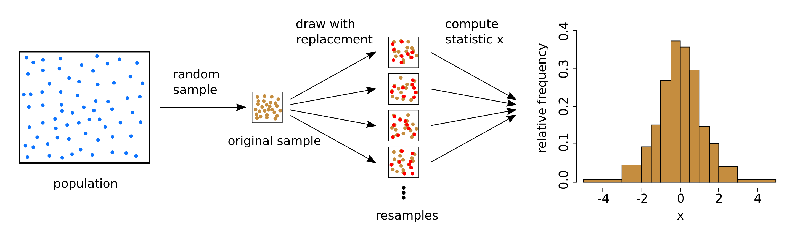
Sample creation
Model training + evaluation
Performance aggregation
Definition: A statistical technique using repeated sampling with replacement from a dataset to train and evaluate model performance.
Use Case: Ideal for small datasets or when assessing model performance variability. Commonly used for accuracy estimation and model validation.
Pros:
Variability estimation: Offers insights into the model’s performance variability.
Flexible: Non-parametric and adaptable to various data distributions.
Cons:
Computationally demanding: High computational cost due to repeated resampling and training.
Overfitting bias: Can be overly optimistic for overfitting models.
Applying resampling methods
import time
start_time = time.time()
y_train = y_train.to_numpy()
loo = LeaveOneOut()
loo_f1_scores = []
for train_index, test_index in loo.split(X_train_pca):
X_train_fold, X_test_fold = X_train_pca[train_index], X_train_pca[test_index]
y_train_fold, y_test_fold = y_train[train_index], y_train[test_index]
dtree.fit(X_train_fold, y_train_fold)
prediction = dtree.predict(X_test_fold)
f1 = f1_score(y_test_fold, prediction, average = 'weighted')
loo_f1_scores.append(f1)start_time = time.time()
n_iterations = 100
n_size = int(len(X_train_pca) * 0.50)
bootstrap_f1_scores = []
for _ in range(n_iterations):
X_sample, y_sample = resample(X_train_pca, y_train, n_samples=n_size)
dtree.fit(X_sample, y_sample)
predictions = dtree.predict(X_test_pca)
f1 = f1_score(y_test, predictions, average='weighted')
bootstrap_f1_scores.append(f1)ratio = kfold_time / loocv_time
print(f"Ratio of k-Fold time to LOOCV time: {ratio:.4f}")
ratio = bootstrap_time / loocv_time
print(f"Ratio of Bootstrap time to LOOCV time: {ratio:.4f}")
ratio = kfold_time / bootstrap_time
print(f"Ratio of k-Fold time to Bootstrap time: {ratio:.4f}")Ratio of k-Fold time to LOOCV time: 0.0006
Ratio of Bootstrap time to LOOCV time: 0.0053
Ratio of k-Fold time to Bootstrap time: 0.1047Comparing classification methods II
Model evaluation method:
- F1-Score
Subset method:
- k-Fold Cross Validation
Comparing classification methods II
# Define the number of folds
k = 5
# Logistic Regression
ord_log_reg_scores = cross_val_score(ord_log_reg, X_train_pca, y_train, cv = k, scoring = 'f1_weighted')
ord_log_reg_f1_average = np.mean(ord_log_reg_scores)
# KNN
knn_scores = cross_val_score(knn, X_train_pca, y_train, cv = k, scoring = 'f1_weighted')
knn_f1_average = np.mean(knn_scores)
# Decision Tree
dtree_scores = cross_val_score(dtree, X_train_pca, y_train, cv = k, scoring = 'f1_weighted')
dtree_f1_average = np.mean(dtree_scores)print(f"Average F1-Score for Ordinal Logistic Regression: {ord_log_reg_f1_average:.2f}")
print(f"Average F1-Score for KNN: {knn_f1_average:.2f}")
print(f"Average F1-Score for Decision Tree: {dtree_f1_average:.2f}")Average F1-Score for Ordinal Logistic Regression: 0.39
Average F1-Score for KNN: 0.49
Average F1-Score for Decision Tree: 0.48Conclusions
Model evaluation determines how well a model predicts the data
- F1-Score balances Prediction and Recall (best for uneven classes)
Cross validation and bootstrapping are effective ways to prevent overfitting
- k-Fold CV is best for larger datasets
Ordinal Logistic Regression performed worst!
- Occam’s Razor loses…
In-class Exercise
Go to ex-06 and perform the tasks